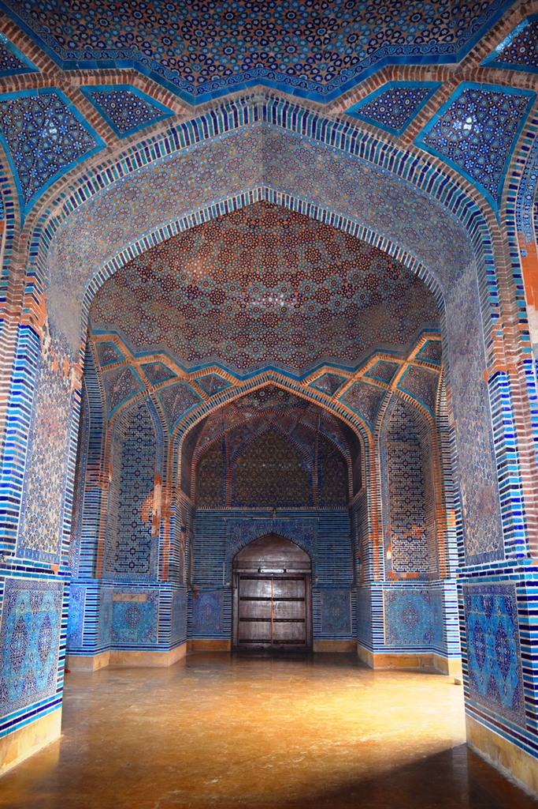

<div class="portfolio-single-load clearfix">
    <div class="custom-full-width-box">
        <div class="custom-container">
            <div class="custom-row align-items-center">
                <div class="custom-image-column">
                    
                </div>
                <div class="custom-text-column">
                    <h2 class="custom-heading">Shah Jahan Mosque
                    </h2>
                    <p class="custom-paragraph">
                        Located near Makli Necropolis, the Shah Jahan Mosque is a unique architectural marvel from the Mughal era. Built during the reign of Shah Jahan, it features intricate tile work and geometric patterns, reflecting the taste of the monarchy. This mosque, a token of gratitude to the Sindhi people, showcases the fusion of Timurid and local architectural styles.

                    </p>
                </div>
            </div>
        </div>
    </div><!-- .custom-full-width-box end -->

</div><!-- end single-project -->
